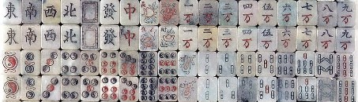
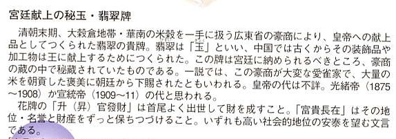

（33）地下室に輝く翡翠牌
|
これは昭和８年、専門誌「麻雀日本」１月号に掲載された柯占山（かせんざん）氏の思いで話。柯占山というと中国人みたいであるが、日本人の変名。内容を読んでいただけばお分かりになるが、変名を使わざるを得ない事情があった。そこでじっさいには誰であったか、いまとなっては知る人はいないと思われる。なお本文にでてくる翡翠牌の話などは後述する。
|
首港(ホンコン)市街、山の手町の中腹に、見るから堂々たる構へをした或る写真館があつた。そしてこの写真舘の主人が、これから私がお話ししやうと云ふ常陸（ひたち）氏なのである。
今は昔、約二十年も前のことであるが、私は民国三年の頃、衰世凱(えんせいがい)氏の刺客を働き、自分から云ふのも可笑しいが、当時、相当な大役を引き受けた。しかしその後ある理由から反抗し、○○を投じて失敗した結果、首に五萬元の懸賞金を附せられてお尋ね者となり、転々として天津(テンシン)、青島(チンタオ)或ひは上海等に逃亡の旅をつゞけ、遂にこの香港にまで落ち延び、そこでふとした奇遇から、この常陸氏に匿まって貰ふことゝなつたのであつた。
前にも言った様に常陸氏の表看板は写真業に違ひなかつたが、その実、スマソグラー・フオジリー、人身売買の親元締めで、香港に於ける悪の華、暗黒街の魔王であつたのだ。従つて同氏の邸宅は地階や隧道(ずいどう＝トンネル)等が従横に迷路の好く通じてゐる。
或る日私は南洋に居る同志と協議すべき必要を生じたので、その意を常陸氏に打ち明けた。すると
『承知しました。マア黙って私にお任せ下さい。決して悪い様には計ひませんから…』
と云ふ返事だつた。
しかしその後−向に音沙汰がないので、若しかするとあれつきり忘れて了つたのではないだらうかと、内心少しばかり心配になつていた。しかしそれから暫く経つた或る日、常陸氏はわざく私の部屋を訪れて、
『今日貴下に或る人を御紹介しませぅ。どうぞ黙って私の後からついてついて来て下さい。』
と言つた。
私は導かれるままに従つて行くと、廊下の突き当たりが何時の問にか合胴返しに開いて其処に細い通路が現れ、豆電球が微かな光を投げ与へてゐた。この通路を突き当たると、又右の羽目板が開いて階段が現れてた。かくすること七回目で、、やうやく或る地下の室に導かれたのだつた。
其処は絢爛、目も輝くばかりの大広間であった。床は全部燃ゆるやうな支那絨毯で、黄龍、青龍が雲を呼んでゐる模様や、凰鳳が紫の色濃き桐の花咲く林野に遊ぶさまなどが描かれてあつた。
柱という柱はすべて朱塗りに金銀珠玉をちりばめた豪洒なものであり、又天井には天女散花の色彩が五色にあやどられ、之に調和して数個のシャンデリヤが明煌と輝いてゐた。この一室がいかに贅を尽くしたものかは、かの有名な北京の御殿を一度参観された方々なら、あの建築に一層磨きをかけたものとお考へ下されば、充分御想像のつ〈ことと思ふ。
廣間には既に二人の先客が居た。そこで常陸氏は私にこの二人の客人を紹介して呉れた。客人の一人は黄（こう）と云ひ、当時、香港から上海近辺の沿岸を荒してゐた海賊の首領だつた。そして他の一人は劉（りゅう）と云つて、四川奥地の馬賊の首領だつたのである。
『このお二方共、中々有名な方でして・・・・』
常陸氏は微笑しながら、さう言った。
お互ひにこれまで渡つてきた世界が世界だけに、話は至極簡単に成立して、私は黄氏の世話で、此処から秘かに南洋へ亡命することに決つた。
『さう話がきまれば、どうです麻雀でもや少ませんか』
小女に命じて、一組のポン和臺子が運ばれた。
四人が型通り夫々(それぞれ)定めの席に着くと、
『これは私自慢の牌でしてね』
と常陸氏は一同を見回して朗らかに笑つた。卓子(テーブル)の上に持ち込まれた牌は、象牙と翡翠とルビーをちりばめたた逸品だった。どの牌も、どの牌も、皆打つには惜しい様な感じのするものばかりである。
私はこれまでにこんな贅沢な麻雀牌を見たことがない。そして各自のうしろには、美しく着粧つた小女が盆に弗票(ドルひょう)を束ねて立ってゐた。
翡翠の牌が卓上に叩かれると、ビーンと澄みきつた音が部屋中に響き渡つた。この牌で、この豪奢な部屋で・・・・
いつしか夜も更けて行つた。竹戦が経ると私は別室に案内された。そこは寝室になつてゐて、目も醒めるばかりの衣裳をまとつた小女が私の来るのを待つてゐた。私は・・・・
それから何時間経つたか知らない。フト目を覚すと私の身体は何時の問にか、大洋を航してゐるヂヤンクの一室に横たはつてゐたのだ。
どこからか帆や舵(かじ)の上下に就ひて指揮する黄氏の声が聞へて来た。黄氏は私との約束をはたすために、南洋へ向けてヂヤンク怪紳丸の快走を続けさせていたのであつた。
いま私の脳裡からは、あの絢爛な地下の大廣間で、翳翠の麻雀を打つた記憶が何時までも、はなれられない。
|
この話に出てくる翡翠牌がどのようなモノだったのか。ココに出てくる超財宝牌とどっちがすんごいのか分からないが、相当豪華なモノには違いない。
ルービーやダイヤをちりばめた超財宝牌ほどではないけれど、翡翠牌そのものは麻雀博物館も所蔵している。


写真映りがよくないので申し訳ないが、これも実物は相当豪華な牌。いずれにしても大したもんだ。
|